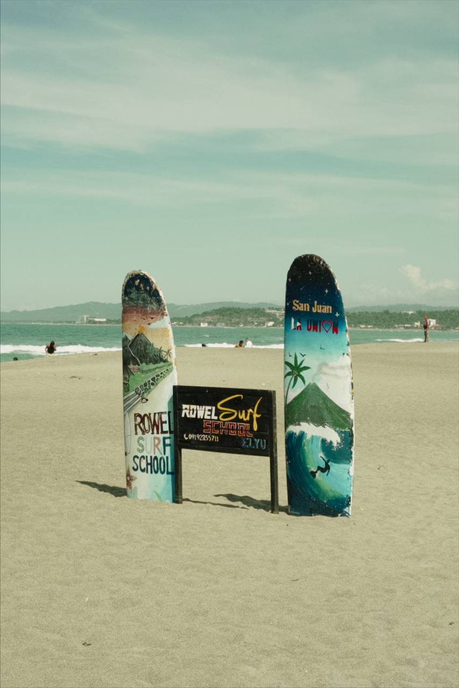
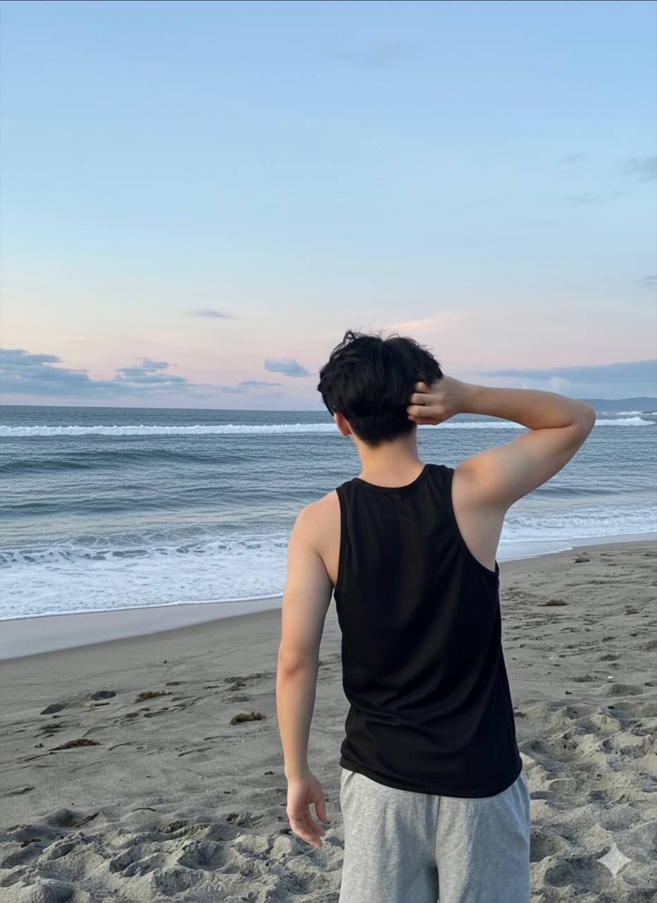
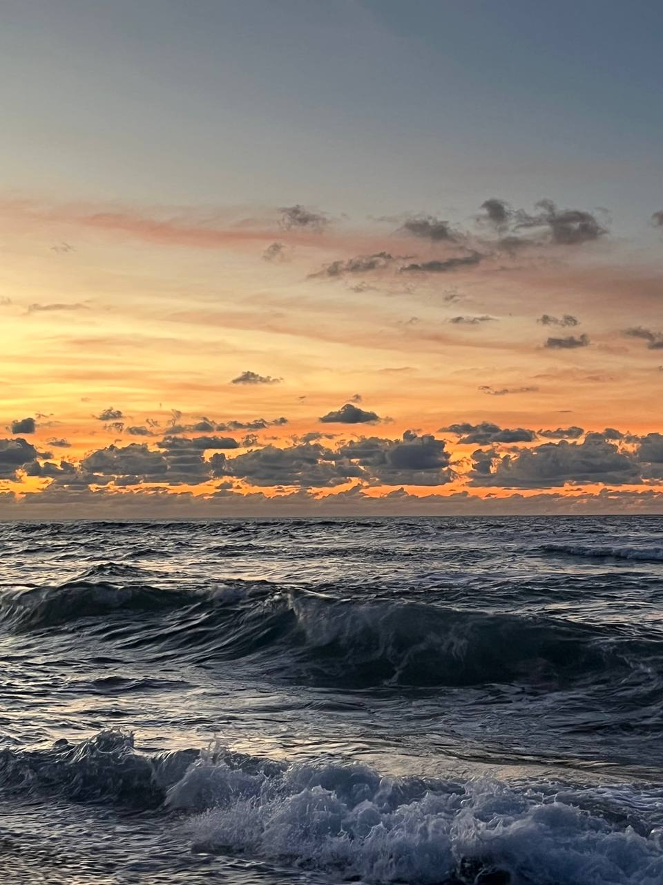

Japan has always been at the top of my travel bucket list. The perfect blend of ancient traditions and cutting-edge technology, serene temples alongside bustling cities, and a culture that values respect, precision, and beauty in everything—Japan represents a world I've dreamed of experiencing firsthand.
Why Japan?
- Cherry Blossom Season: Witnessing the magical sakura bloom in spring, with pink petals creating a dreamy landscape across the country.
- Ancient Temples & Shrines: Exploring historic sites like Kyoto's Fushimi Inari Shrine with its thousands of red torii gates.
- Modern Tokyo: Experiencing the electric energy of Shibuya Crossing, Akihabara's tech wonderland, and the towering Tokyo Skytree.
- Japanese Cuisine: Tasting authentic sushi, ramen, tempura, and matcha desserts in their place of origin.
- Mount Fuji: Seeing Japan's iconic mountain, perhaps even attempting to climb it.
- Cultural Immersion: Participating in a traditional tea ceremony, staying in a ryokan, and experiencing Japanese hospitality.
What I Want to See & Experience

Cherry Blossoms in Full Bloom

Fushimi Inari Shrine, Kyoto

Tokyo's Vibrant Cityscape

Majestic Mount Fuji

Authentic Japanese Cuisine

Traditional Tea Ceremony